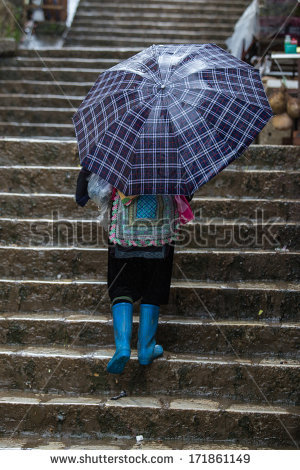

Consejos relacionados con el clima en TEC Campus Querétaro
Querétaro se considera como uno de los lugares más privilegiados por su clima templado, sin embargo, no todos los días hace calor, ¡Como tal vez estás pensando!, debido a los daños que ha sufrido nuestra capa de ozono, el clima en todo el mundo ha sufrido grandes alteraciones; y Querétaro, es una de las tantas ciudades, que se ha visto afectada por este fenómeno. Por esta razón no debemos confiarnos y traer en nuestra maleta ¡Pura ropa de verano!
Recomendaciones sobre qué ropa incluir en nuestro equipaje/guardarropas para tu estancia en la ciudad de Querétaro:
01. Una chamarra abrigadora y/o impermeable, y bufanda.
Te servirá la mayoría de las mañanas en que amanece frío y en las noches cuando empieza a refrescar.
02. Una sudadera cómoda.
Te servirá para los días frescos, pero no tan fríos como para usar chamarra.
03. Botas para lluvia.
Cuando en Querétaro llueve, las calles se inundan, y si vas caminando es imposible no mojarte los pies.

04. Pantalones de mezclilla - jeans , camisetas, playeras y unos zapatitos
Versátiles y cómodos, que puedas usar para las diferentes actividades durante el día.
05. Shorts, camisetas y sandalias; para los días calurosos.
Pero no te confíes, en que podrás usarlos todo el día porque posiblemente en la noche volverá a hacer frío.
06. Un par de tacones para salir en la noche.
Aunque no te los recomiendo para ir a la escuela ya que las distancias entre las diferentes áreas del campus son largas y algunas tienen piedras, te será más difícil correr cuando vayas tarde a clase.
07. Mudas de ropa deportiva, incluyendo traje de baño y accesorios de natación.
El Tec cuenta con múltiples instalaciones para hacer deporte, las cuales te fascinarán.
08. Muda de ropa formal.
En el Tec posiblemente tendrás muchas presentaciones, en las que los profesores te pedirán asistir con vestimenta formal.
El Tecnológico de Monterrey Campus Querétaro, es una institución que promueve la individualidad y personalidad de sus alumnos, y no mantiene un código de vestimenta especifico; por lo que podrás sentirte libre de vestir como más cómodo te sientas.
En el Tecnológico de Monterrey Campus Querétaro, se cuenta con salones techados y aire acondicionado, que mantiene más cómodos a los alumnos en tiempos de calor; sin embargo no poseen sistema de calefacción, por lo que se recomienda ir bien abrigados en tiempos de frío; sobre todo a primeras horas de la mañana y al acercarse el anochecer.
Recuerda que estando en Querétaro, no importa si es Primavera, Verano, Otoño o Invierno; en cualquier época del año hace frío la mayoría de las mañanas y por la noche, y durante el día hace mucho calor. Hay ocasiones en los que está frío y llueve todo el día, y al día siguiente sucede todo lo contrario. Por lo que te recomendamos checar el clima diariamente para saber cómo vestir y que los cambios climáticos no te tomen por sorpresa.
Information to be added